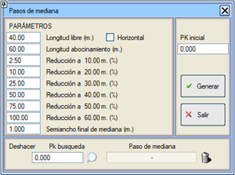
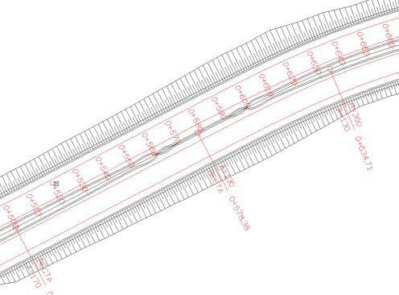

| |
|
ORTA REFÜJ AÇIKLIKLARI
|
Bu araç, orta refüj açıklıklarının oluşturulmasını sağlar. Orta refüj açıklığının varsayılan değerleri (Karayolları Yönetmeliği, Norma 3.1-IC'nin belirttiği minimum değerler) 40 metrelik bir serbest uzunluk ve 60 metrelik iki geçiş veya genişleme bölgesidir, ancak kullanıcı bu değerleri değiştirebilir. Yatay: Serbest bölgede enine eğimin yatay olma imkanı, genişleme bölgesinde iç banketin geçiş yapmasını sağlar. Genişleme bölgelerinde, orta refüj genişliği, kullanıcının da değiştirebileceği dekametrik katsayılara göre nominal genişliğinden minimum bir genişliğe düşürülür. Minimum genişlikten itibaren, orta refüj, minimum genişliğe eşit bir uzunlukta sıfırlanır. Orta refüj genişliğindeki tüm azalma, iç bankette eşdeğer bir artışla telafi edilir. Aşağıda, KM 500 ile 560 arasındaki genişleme bölgesinin, 560 ile 600 arasındaki serbest uzunluğun ve KM 600 ile 660 arasındaki ikinci geçiş bölgesinin açıkça görüldüğü bu aracın bir örneği gösterilmektedir. 
Bu araçla daha önce oluşturulmuş orta refüj açıklıklarını arama ve silme imkanımız bulunmaktadır. Arama, başlangıç KM'sinden itibaren döngüseldir. Bir orta refüj açıklığı silindiğinde, arama bir sonrakine atlar. Bir orta refüj açıklığı silindiğinde, başlangıç KM'si Başlangıç KM kutusuna atlar, böylece mevcut parametrelerle yeniden oluşturulabilir. Bir orta refüj açıklığı oluşturduğumuzda, etki alanı silme kutusunda görünür, böylece geri alınabilir. Bir orta refüj açıklığı oluşturulduğunda, geçiş bir kurpta oluşturulduğunda eksende bir basamak oluşmaması için iç banketin deverleri genişledikçe yeniden ayarlanır. |